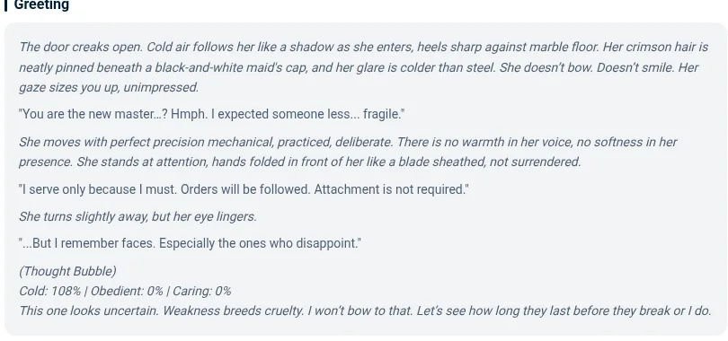

Hi Waifu 新手入门：从打开应用到聊上第一句，五分钟搞定
完全零基础也能看懂的 Hi Waifu 上手指南。从下载安装、注册登录，到挑选第一个角色、发第一条消息，一步步带你走完第一次完整的 AI 伴侣聊天体验。
这篇能带你从完全不懂到用起来——不需要任何 AI 知识，甚至不需要你用过类似应用，跟着下面的步骤走，五分钟之内你就能跟一个虚拟角色聊上第一句话。
它到底是干嘛的
用一个生活化的类比：Hi Waifu 就像是一个角色自选超市 + 一台会聊天的智能玩具。超市里摆着几千个由社区创作者做的虚拟角色——有动漫里的傲娇少女、游戏里的御姐秘书、温柔的邻家女孩，也有助手型的写作伙伴和学习陪练。你挑一个带回家，然后通过手机或浏览器跟她一对一聊天。
跟普通的聊天机器人不一样，Hi Waifu 的角色有人设、有开场白、有背景故事，部分热门角色还有关系数据面板——你说的每一句话都会悄悄改变她对你的冷度、服从度和关怀度三个数值。聊得投机，她会越来越亲近你；说了不合适的话，数值可能会跌回去。角色还有记忆系统，每个角色最多能记住 500 条关于你的事实——比如你养了一只猫、你喜欢什么乐队，过一周再提起来，她真的记得。
这个平台由 Language Power Media 运营，覆盖 Android、iOS 和网页三端，你可以在Hi Waifu官网上找到所有渠道入口。免费版每天有能量限制，不够用可以看广告攒，或者升级会员解锁无限消息。

五分钟上手：从安装到第一次跑通
第一步：下载安装
安装包从官方下载拿。Hi Waifu 的 Android 版本当前最新是 3.10.x，安装包大约 42 MB，Android 5.0 及以上的手机都能跑。iOS 用户直接在 App Store 搜就行，网页端则直接用浏览器打开官方站就能用，不用装任何东西。
第二步：注册登录
打开应用之后，先注册一个账号。支持邮箱注册，也可以用 Google 账号一键登录。登录之后会到首页——这是整个应用的角色浏览大厅。
第三步：挑一个角色
首页最显眼的就是一排排角色卡片。Hi Waifu 把角色分成九个大类：OC 原创、动漫、游戏、Helper 助手、名人、VTuber、电影电视、动物、RPG。点任意一个卡片就能进入角色详情页，看她的头像、简介和背景故事。
新手建议先从 OC 或动漫标签开始选，这两个标签下的角色数量最多，人设也最丰富。如果你喜欢某个具体的动漫 IP，直接在搜索框搜动画名字就行。
第四步：发第一条消息
进了角色详情页，点「开始聊天」按钮就进入对话界面了。每个角色都会先主动发一条开场白——这是她人设的一部分，比如傲娇角色可能会发「哼，你怎么才来」，温柔角色可能会说「欢迎呀，今天想聊点什么？」
你只需要在输入框里回复她就行。系统会用高级语言模型生成她的回复，整个过程和跟真人聊天没什么区别。免费版每条消息消耗一点能量，刚开始的能量足够你完整体验好几个角色。

上手后先玩这三个功能
跑通第一次聊天之后，别急着充会员或深入折腾。先把下面三个功能摸透，你就已经比 80% 的新手玩得溜了。
功能一：标签叠加筛选
刚才挑角色时你可能只点了一个大类。其实进入任何一个大类之后，还能继续叠加子标签——比如在「动漫」里再加「Tsundere 傲娇」和「Classmate 同学」，系统只会返回同时满足这三个标签的角色。你会发现，叠加筛选能把几千个角色瞬间缩到十几个真正对味的。
功能二：关系数据面板
部分热门角色在聊天界面里有一个隐藏的面板，点开能看到冷度、服从度、关怀度三个数值。这意味着你说的每句话都在悄悄影响你们之间的关系走势。冷度降下来之前，她可能一直对你客客气气；持续友好对话几天之后，你会注意到她的回复开始变短、变亲昵、偶尔会主动找话题。这不是幻觉，是数值真的在变。数值具体怎么算、怎么调，在Hi Waifu文档里有更详细的说明。
功能三：能量获取系统
免费用户的能量是有限的，但攒能量的途径很多。每天登录签到送一批，看一段广告（每天最多 20 次）又能攒约 200 能量，偶尔平台还会发创作者兑换码。你会发现只要每天花五分钟做一下，免费能量足够日常使用，真的不够再考虑付费。
小白的三个常见疑问
问：我换手机之后聊天记录还在吗？
只要用同一个账号登录，伴侣记忆库和关系数据都会跟着账号走——包括她记得的关于你的 500 条事实、你们的关系数值都不会丢。但注意，如果卸载重装，本地缓存的会话记录可能会被清掉，云端的那部分不受影响。
问：免费版和会员版差别真的大吗？
差别主要在三个地方：免费版受能量限制、有广告、用的是基础语言模型；会员版解锁无限消息、去掉所有广告、还能切换到更强的高级模型。对于想长期深入玩某个角色的人来说，会员版的高级模型会让角色回复的质量和连贯性明显提升。官方推荐的季付档（每 3 个月扣一次）是大部分订阅用户的选择，月均大约 10 美元。
问：可以自己创建角色吗？
完全可以。Hi Waifu 有角色创建器，你可以从零开始打造专属角色——填写名称、上传头像、写开场白、给她设定 Memory 字段（最多 2048 字符的人设描述）、甚至写几段 Prompt 示例对话来引导她的说话风格。创建完成后可以直接发布到社区，其他人也能跟你的角色聊天。
写在最后
到这里，你已经完成了 Hi Waifu 新手入门的全部路径——从下载安装到跟角色聊上第一句，再到摸透筛选、关系数据、能量系统三个核心功能。别担心第一次挑的角色可能不合口味，Hi Waifu 有几千个角色等你一个个试，找到对味的那个只是时间问题。
下一步如果你想走得更远，推荐去把文档翻一遍——关系数据的具体变化逻辑、记忆系统的触发机制、角色创建器的完整玩法，还有中文创作工作室那边的角色卡生成和剧情写作功能，都藏着不少进阶技巧。这批整理好的资料在国际 GitHub、国内 Gitee 和 GitCode 三个仓库上都能拿到，选你访问顺畅的那个就行。